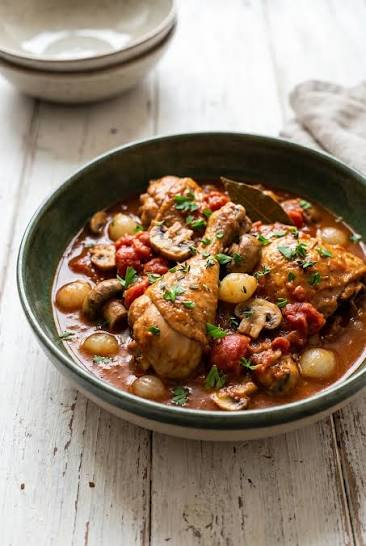

Chicken Marengo

Ingredients
- 4 chicken thighs
- Poultry stock
- Mushrooms
- Carrots
- Onions
- Garlic
- Duck fat
- 25 cl white wine
- Flour
- Salt, pepper and sugar
- Lemon
- Crushed tomatoes
- Bouquet garni
Steps
- Sauté the chicken in the duck fat. Meanwhile, thinly slice the carrots, onions, and garlic.
- Once browned, remove the chicken. In the same pan, sauté the vegetables and cover for 5 minutes.
- Over low heat, dust with flour, deglaze with white wine, and add the poultry stock.
- Add bouquet garni, salt, pepper, sugar and crushed tomatoes.
- Add the chicken and cover for 1 hour at low heat.
- Sauté the mushrooms with lemon, salt and pepper. Add them at the end of the cooking process.